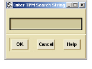

AST
The AST menu allows you to browse the abstract syntax tree to find the related nodes for selected entities.
AST menu options include:
• Find nodes in files requires that you first select a file from the Elements pane. This option presents a dialog box where you can enter a valid TPM expression to execute a search for a desired node in the selected file.

If you have not selected a file, DIScover displays an error message asking you to first select a file.
• Find nodes of symbols executes a search for the related node of a selected entity. Matching nodes display in the Results pane.
• Force nodes valid—for nodes that do not have a region of text associated with them (for example, implicit type conversions), this option finds the nearest enclosing region.
• Get parent node navigates the AST to find the parent node of a selected node. Requires the selection of a previously identified node.
• Get child node navigates the AST to find all children of the selected parent node. Requires the selection of a previously identified node.
• Show AST tree opens a viewer that displays the portion of the AST that contains the selected entity.